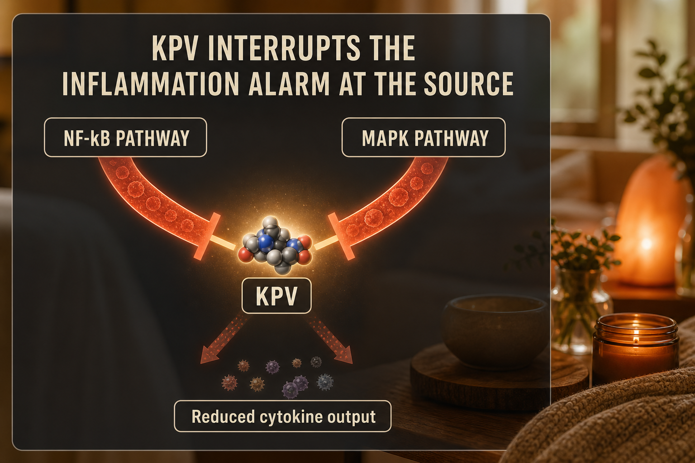

What KPV Is
KPV (Lysine-Proline-Valine) is a tripeptide - three amino acids - derived from the C-terminal sequence of alpha-MSH (alpha-melanocyte-stimulating hormone). Alpha-MSH is a naturally occurring hormone with well-documented anti-inflammatory properties. KPV captures the three-amino-acid sequence responsible for much of alpha-MSH's anti-inflammatory activity in a smaller, more stable form.
What makes KPV particularly interesting is its documented ability to be absorbed through the gut lining via the PepT1 transporter - the same transporter that shuttles di- and tripeptides from your gut into circulation. This means KPV can be taken orally for gut-specific applications, unlike most peptides that are degraded in the stomach before absorption.
Research on KPV has focused primarily on inflammatory bowel conditions, skin inflammation, and mucosal tissue protection. The landmark 2008 study by Dalmasso et al. in Gastroenterology demonstrated that KPV delivered via PepT1-targeted nanoparticles reduced colitis severity by 50 to 70 percent in animal models. A 2008 study by Kannengiesser et al. in Inflammatory Bowel Diseases confirmed the PepT1 uptake mechanism, providing the mechanistic basis for oral dosing in gut applications.
KPV has no WADA prohibition and no hormonal suppression mechanism. It is not FDA-approved. It exists as a research chemical available from research peptide suppliers.
Plain English Version
The Building Manager Who Stops the Alarm
Imagine a building with a fire alarm system. When there is a real fire, the alarm is essential. But sometimes the alarm gets stuck - it goes off when there is no real fire, or it stays on long after the small issue that triggered it has been resolved. The constant alarm causes problems of its own: it disrupts everything, wastes energy, and stresses the building's systems even when the original problem is gone.
Inflammation is your body's alarm system. Acute inflammation in response to real injury or infection is essential - it is how your immune system mobilizes repair resources. But chronic inflammation is the stuck alarm. It runs continuously, exhausting cellular resources, degrading tissue, and creating a background noise of damage that compounds over time.
KPV is the building manager who goes directly to the alarm panel and resets it. It does not disable your immune system. It does not prevent real alarms from going off when needed. It targets the specific molecular switches - NF-kB and MAPK - that decide when the alarm should sound, and tells them to calm down when they are running without a genuine reason.
This is why KPV is particularly relevant for conditions like inflammatory bowel disease, Hashimoto's thyroiditis, PCOS-related inflammation, and post-exercise inflammatory load. In each of these situations the alarm system is running when it does not need to be. KPV helps turn it off without disabling the whole fire safety system.
One sentence: KPV calms your body's inflammation alarm by targeting the specific molecular switches that control when inflammation starts and stops.
How To Picture It

How It Works
KPV acts as an anti-inflammatory signaling molecule by interrupting two major intracellular inflammatory cascades: the NF-kB pathway and the MAPK pathway. These are not obscure secondary pathways - they are among the most studied inflammatory signaling systems in medicine, and they regulate the production of pro-inflammatory cytokines including TNF-alpha, IL-6, and IL-1beta.
By blocking the nuclear translocation of NF-kB (the step that converts an inflammatory signal into inflammatory cytokine production), KPV prevents the amplification of inflammatory response at the cellular level. The MAPK pathway modulation adds a second layer, affecting a different branch of the same inflammatory cascade.
The PepT1 transporter mechanism is particularly notable. The intestinal PepT1 transporter normally absorbs small peptides from food. KPV is recognized by this transporter, which means oral KPV reaches colonic epithelial cells directly - making it one of the only injectable peptides that can also be taken orally for gut-specific applications with documented absorption.
Documented Benefits
the most documented application; 50-70% cytokine reduction in preclinical colitis models
KPV supports mucosal tissue integrity alongside BPC-157's local repair effects
the gut-thyroid inflammatory axis makes KPV relevant for autoimmune thyroid conditions
chronic low-grade inflammation is a feature of PCOS; KPV addresses this without hormonal mechanism
reduces the inflammatory burden from training without suppressing the adaptive response
studied for topical and systemic application in inflammatory dermatology
unique among injectable peptides; can be taken orally for gut-specific use
Dosing Protocol
| Phase | Dose | Frequency | Route | Notes |
|---|---|---|---|---|
| Starting | 200mcg | Daily | SubQ or oral | Low start to assess tolerance |
| Standard | 300-500mcg | Daily | SubQ | Most documented systemic protocol |
| Gut-specific | 300-500mcg | Once or twice daily | Oral | Dissolved in water for GI applications |
| Higher-burden | Up to 1,000mcg | Daily | SubQ | Upper documented community range |
No completed human dose-finding trial exists for KPV. All dosing is based on preclinical extrapolation and community-derived protocols. Start low and increase gradually.
Reconstitution Standard
KPV vials vary by supplier. Common: 10mg vial + 2ml BAC water = 5mg/ml
| Your Dose | Units to Draw | Volume |
|---|---|---|
| 200mcg | 4 units | 0.04ml |
| 300mcg | 6 units | 0.06ml |
| 500mcg | 10 units | 0.1ml |
| 1,000mcg | 20 units | 0.2ml |
Note: In KLOW 80 reconstituted with 3ml BAC water, you receive approximately 33mcg of KPV per 10-unit dose - well below standalone therapeutic dosing. Standalone KPV is used when higher KPV-specific dosing is the goal.
Dosage Build-Up Timeline
- Week 1-2: 200mcg daily - low start, assess tolerance and any GI response
- Week 3-4: 300mcg daily - move toward standard range
- Week 5+: 300-500mcg daily - maintain at effective anti-inflammatory level
- Reassess at 8 weeks based on symptom response - no mandatory time-based cycling required
Common Mistakes
KPV modulates inflammatory pathways; it does not eliminate inflammation the way pharmaceutical anti-inflammatories do
for IBD and gut-specific applications, oral KPV has documented absorption; injectable is not the only valid route
KPV at 1,000mcg daily is the upper documented community range; start at 200mcg and work up
KPV has no receptor desensitization mechanism; reassess based on symptoms rather than a fixed time schedule
KPV modulates immune pathways; combining with pharmaceutical immunosuppressants may have unpredictable additive effects
Contraindications And Cautions
KPV affects inflammatory signaling pathways; combining with pharmaceutical immunosuppressants warrants medical discussion
insufficient safety data; avoid
reducing inflammatory signaling during acute bacterial or viral infection may impair the immune response needed to fight the infection; pause during active illness
discuss with the prescribing physician before adding KPV to an existing treatment plan
What To Track
- Gut symptoms if using for IBD or gut applications (bloating, discomfort, bowel regularity - weekly)
- Joint stiffness and morning inflammation (1-10 weekly)
- Post-exercise soreness duration (days to return to baseline)
- Energy levels (1-10 weekly)
- Any skin changes if using for inflammatory skin conditions
- Thyroid symptoms if relevant (energy, temperature sensitivity, mood - weekly)
Stacks Well With
- BPC-157 - KPV reduces inflammatory interference while BPC-157 executes local tissue repair; together they address the two main barriers to healing
- GHK-Cu - KPV manages inflammation while GHK-Cu rebuilds collagen; paired in KLOW for this reason
- NAD+ - cellular energy support complements the metabolically demanding work of active inflammatory regulation
- KLOW - the blend containing KPV alongside BPC-157, TB-500, and GHK-Cu in optimized ratios
Sources
- Dalmasso G et al. KPV tripeptide via PepT1 transporter reduces colitis severity. Gastroenterology, 2008. pubmed.ncbi.nlm.nih.gov
- Kannengiesser K et al. KPV uptake through PepT1 in colonic epithelium. Inflammatory Bowel Diseases, 2008. pubmed.ncbi.nlm.nih.gov
- KPV Peptide Dosing Guide 2026. PeptideDosingProtocols.com. peptidedosingprotocols.com
- KPV Peptide Guide 2026. ThePeptideToolkit.com. thepeptidetoolkit.com
- PeptideFox. KLOW mechanism and component analysis. peptidefox.com
- Alpha-MSH and KPV anti-inflammatory mechanisms. PubMed search: KPV alpha-MSH NF-kB. pubmed.ncbi.nlm.nih.gov
For educational and research documentation purposes only. Not medical advice. Always speak with a qualified healthcare professional before making health decisions.